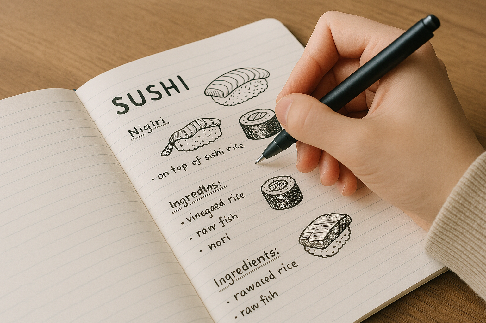

学校での1日
8:30 朝の1握り
学生と職員が集まってその日のすし作品を1つ作ります。
9:30 午前の授業
各学生がそれぞれの選択した講義を受けます。
12:00 昼休憩
学食では寿司やアンコリーノ、ベジマイト、マセドナルドなど様々な食事が出来ます。

13:00 午後の授業
4年生では卒業すし握りなども行います。
16:00 サークル活動
無料回収サークルやレジスタンス愛好会など、様々なサークルがあります。
イベント
4月
入学式 - 新入生にすしバッジが送られます。
5月
すし配布ボランティア - 公園やイベント会場などで無料ですしを配布します。
7月
大すし祭 - 2年に1度、各クラスから出し物をします。
9月
すし大会 - すしで競います。
11月
海外旅行 - 海外で最先端のすしに触れます。
2月
卒業すし発表会 - 4年生が卒業すし研究の発表をします。